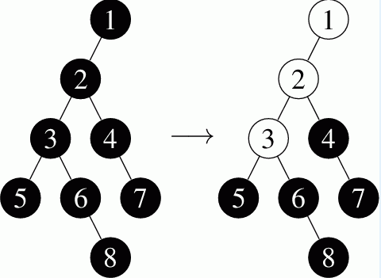

第一行：球的个数N，操作个数Q （N, Q <= 100 000）下面N行：第i个节点的父亲。如果是根，则为0 接下来Q行：op num
op == 1：在根放入num个球op == 2：拿走在位置num的球
有一个装球机器，构造可以看作是一棵树。有下面两种操作：
4放2个球，第一个球会落到1，第二个会落到3： 5, 7, 8三个球： 
第一行：球的个数N，操作个数Q （N, Q <= 100 000）下面N行：第i个节点的父亲。如果是根，则为0 接下来Q行：op num
op == 1：在根放入num个球 op == 2：拿走在位置num的球 保证输入合法
op == 1：输出最后一个球落到了哪里 op == 2：输出拿走那个球后有多少个球会掉下来
8 4
0
1
2
2
3
3
4
6
1 8
2 5
2 7
2 8
1
3
2
2